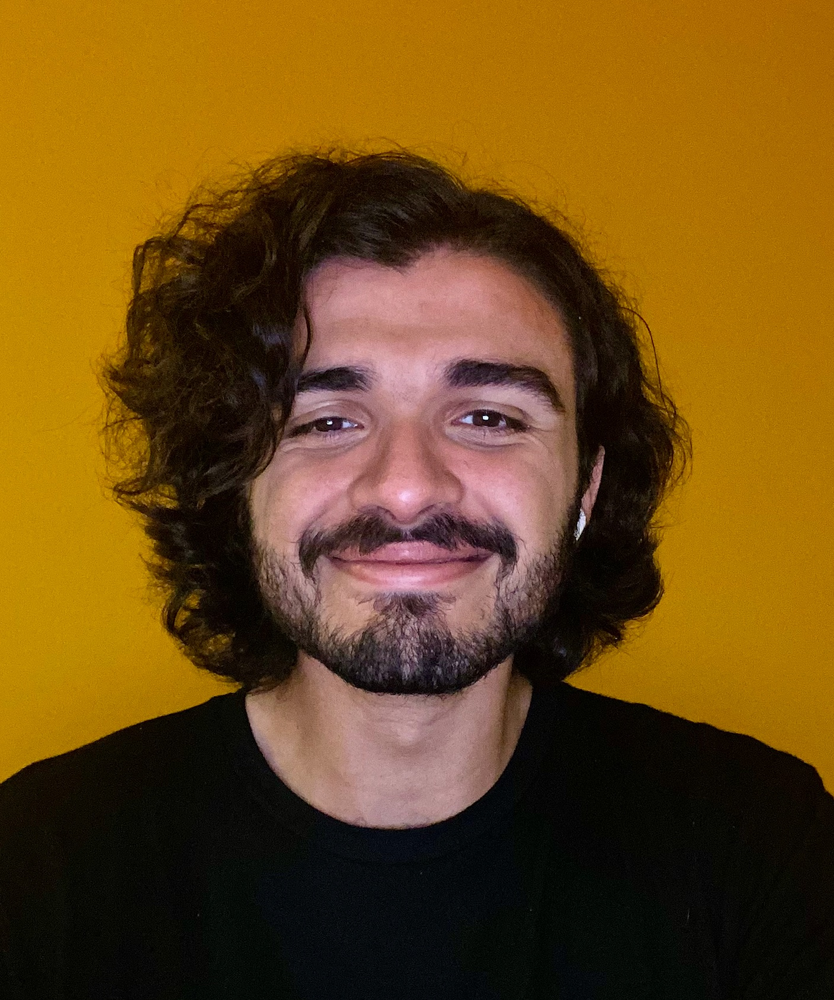
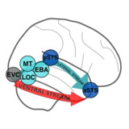
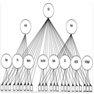

|
Ata Kolday
I'm a masters student and graduate researcher in Cognitive Science at Johns Hopkins University.
My primary research has been in motor imitation among children who were diagnosed with Autism Spectrum Disorder (ASD) and Attention-Deficit and Hyperactivity Disorder (ADHD).
Previously, I have completed my B.A. (High Honors) in Political Science at the University of California, Berkeley with a specialization on political behavior.
Email /
CV /
LinkedIn /
Twitter /
Github
|

|
Research
I'm interested in the biology and neuroscience of ASD, ADHD, and OCD. In particular, I aim to explore data-driven approaches to elucidate the comorbidity across these conditions and novel statistical
and machine learning tools to model the idiosyncracies of their brain, mind, and behavior.
|
|

|
Large-scale Deep Neural Network Benchmarking in Dynamic Social Vision
Kathy Garcia,
Colin Conwell,
Emalie McMahon,
Michael F. Bonner,
Leyla Isik
VSS, 2024 (Talk presentation)
Large-scale benchmarking of 300+ DNNs with diverse architectures, objectives, and training sets, against fMRI responses to a curated dataset of 200 naturalistic social videos, with a focus on the "lateral" visual stream.
|
|

|
Predicting Dimensional Symptoms of Psychopathology from Task-Based fMRI using Support Vector Regression
Kathy Garcia,
Zach Anderson,
Iris Ka-Yi Chat,
Katherine S.F. Damme,
Katherine Young,
Susan Y. Bookheimer,
Michelle Craske,
Robin Nusslock
SfN Global Connectome, 2021 (Virtual poster presentation)
This study develops a novel machine learning approach using Support Vector Regression (SVR) to explore potential biomarkers in fMRI data for symptoms of anxiety and depression,
finding that MID task-fMRI data does not accurately predict these symptoms, with results indicating a poor model fit.
|
|
|
Teaching Assistant, Cognitive Neuropsychology of Visual Perception, Spring 2024
Teaching Assistant, Neuroimaging Methods in High-Level Vision, Fall 2023
Teaching Assistant, Computational Cognitive Neuroscience of Vision, Spring 2023
|
|
{kind=link}